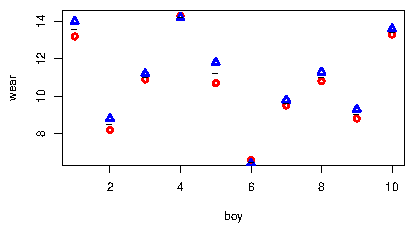

R> data(shoes, package="MASS") R> shoes
$A [1] 13.2 8.2 10.9 14.3 10.7 6.6 9.5 10.8 8.8 13.3 $B [1] 14.0 8.8 11.2 14.2 11.8 6.4 9.8 11.3 9.3 13.6A plot clearly reveals that boys wear their shoes differently.
R> plot(A~1, data=shoes, col="red",lwd=2, pch=1, ylab="wear", xlab="boy") R> points(B~1, data=shoes, col="blue", lwd=2, pch=2) R> points(I((A+B)/2)~1, data=shoes, pch="-", lwd=2) One option for testing the effect of materials is to make a paired t-test. The following forms are equivalent:
R> r1<-t.test(shoes$A, shoes$B, paired=T) R> r2<-t.test(shoes$A-shoes$B) R> r1
Paired t-test data: shoes$A and shoes$B t = -3.3489, df = 9, p-value = 0.008539 alternative hypothesis: true difference in means is not equal to 0 95 percent confidence interval: -0.6869539 -0.1330461 sample estimates: mean of the differences -0.41To work with data in a mixed model setting we create a dataframe, and for later use we also create an imbalanced version of data:
R> boy <- rep(1:10,2)
R> boyf<- factor(letters[boy])
R> mat <- factor(c(rep("A", 10), rep("B",10)))
R> ## Balanced data:
R> shoe.b <- data.frame(wear=unlist(shoes), boy=boy, boyf=boyf, mat=mat)
R> head(shoe.b)
wear boy boyf mat A1 13.2 1 a A A2 8.2 2 b A A3 10.9 3 c A A4 14.3 4 d A A5 10.7 5 e A A6 6.6 6 f A
R> ## Imbalanced data; delete (boy=1, mat=1) and (boy=2, mat=b) R> shoe.i <- shoe.b[-c(1,12),]We fit models to the two datasets:
R> lmm1.b <- lmer( wear ~ mat + (1|boyf), data=shoe.b ) R> lmm0.b <- update( lmm1.b, .~. - mat) R> lmm1.i <- lmer( wear ~ mat + (1|boyf), data=shoe.i ) R> lmm0.i <- update(lmm1.i, .~. - mat)The asymptotic likelihood ratio test shows stronger significance than the t-test:
R> anova( lmm1.b, lmm0.b, test="Chisq" ) ## Balanced data
Data: shoe.b Models: lmm0.b: wear ~ (1 | boyf) lmm1.b: wear ~ mat + (1 | boyf) npar AIC BIC logLik deviance Chisq Df Pr(>Chisq) lmm0.b 3 67.909 70.896 -30.955 61.909 lmm1.b 4 61.817 65.800 -26.909 53.817 8.092 1 0.004446 ** --- Signif. codes: 0 '***' 0.001 '**' 0.01 '*' 0.05 '.' 0.1 ' ' 1
R> anova( lmm1.i, lmm0.i, test="Chisq" ) ## Imbalanced data
Data: shoe.i Models: lmm0.i: wear ~ (1 | boyf) lmm1.i: wear ~ mat + (1 | boyf) npar AIC BIC logLik deviance Chisq Df Pr(>Chisq) lmm0.i 3 63.869 66.540 -28.934 57.869 lmm1.i 4 60.777 64.339 -26.389 52.777 5.092 1 0.02404 * --- Signif. codes: 0 '***' 0.001 '**' 0.01 '*' 0.05 '.' 0.1 ' ' 1
R> ( kr.b<-KRmodcomp(lmm1.b, lmm0.b) )
large : wear ~ mat + (1 | boyf) small : wear ~ (1 | boyf) stat ndf ddf F.scaling p.value Ftest 11.215 1.000 9.000 1 0.008539 ** --- Signif. codes: 0 '***' 0.001 '**' 0.01 '*' 0.05 '.' 0.1 ' ' 1
R> summary( kr.b )
F-test with Kenward-Roger approximation; time: 0.16 sec large : wear ~ mat + (1 | boyf) small : wear ~ (1 | boyf) stat ndf ddf F.scaling p.value Ftest 11.215 1.000 9.000 1 0.008539 ** FtestU 11.215 1.000 9.000 0.008539 ** --- Signif. codes: 0 '***' 0.001 '**' 0.01 '*' 0.05 '.' 0.1 ' ' 1Relevant information can be retrieved with
R> getKR(kr.b, "ddf")
[1] 9For the imbalanced data we get
R> ( kr.i<-KRmodcomp(lmm1.i, lmm0.i) )
large : wear ~ mat + (1 | boyf) small : wear ~ (1 | boyf) stat ndf ddf F.scaling p.value Ftest 5.9893 1.0000 7.0219 1 0.04418 * --- Signif. codes: 0 '***' 0.001 '**' 0.01 '*' 0.05 '.' 0.1 ' ' 1Notice that this result is similar to but not identical to the paired t-test when the two relevant boys are removed:
R> shoes2 <- list(A=shoes$A[-(1:2)], B=shoes$B[-(1:2)]) R> t.test(shoes2$A, shoes2$B, paired=T)
Paired t-test data: shoes2$A and shoes2$B t = -2.3878, df = 7, p-value = 0.04832 alternative hypothesis: true difference in means is not equal to 0 95 percent confidence interval: -0.671721705 -0.003278295 sample estimates: mean of the differences -0.3375
R> ( pb.b <- PBmodcomp(lmm1.b, lmm0.b, nsim=500, cl=2) )
Bootstrap test; time: 4.28 sec; samples: 500; extremes: 5; large : wear ~ mat + (1 | boyf) wear ~ (1 | boyf) stat df p.value LRT 8.1197 1 0.004379 ** PBtest 8.1197 0.011976 * --- Signif. codes: 0 '***' 0.001 '**' 0.01 '*' 0.05 '.' 0.1 ' ' 1
R> summary( pb.b )
Bootstrap test; time: 4.28 sec; samples: 500; extremes: 5; large : wear ~ mat + (1 | boyf) wear ~ (1 | boyf) stat df ddf p.value LRT 8.1197 1.0000 0.004379 ** PBtest 8.1197 0.011976 * Gamma 8.1197 0.009263 ** Bartlett 6.9497 1.0000 0.008383 ** F 8.1197 1.0000 13.879 0.012953 * --- Signif. codes: 0 '***' 0.001 '**' 0.01 '*' 0.05 '.' 0.1 ' ' 1For the imbalanced data, the result is similar to the result from the paired t test.
R> ( pb.i<-PBmodcomp(lmm1.i, lmm0.i, nsim=500, cl=2) )
Bootstrap test; time: 4.24 sec; samples: 500; extremes: 8; large : wear ~ mat + (1 | boyf) wear ~ (1 | boyf) stat df p.value LRT 5.1151 1 0.02372 * PBtest 5.1151 0.01796 * --- Signif. codes: 0 '***' 0.001 '**' 0.01 '*' 0.05 '.' 0.1 ' ' 1
R> summary( pb.i )
Bootstrap test; time: 4.24 sec; samples: 500; extremes: 8; large : wear ~ mat + (1 | boyf) wear ~ (1 | boyf) stat df ddf p.value LRT 5.1151 1.0000 0.02372 * PBtest 5.1151 0.01796 * Gamma 5.1151 0.02884 * Bartlett 4.5089 1.0000 0.03372 * F 5.1151 1.0000 16.876 0.03722 * --- Signif. codes: 0 '***' 0.001 '**' 0.01 '*' 0.05 '.' 0.1 ' ' 1
R> shoe3 <- subset(shoe.b, boy<=5) R> shoe3 <- shoe3[order(shoe3$boy), ] R> lmm1 <- lmer( wear ~ mat + (1|boyf), data=shoe3 ) R> str( SG <- get_SigmaG( lmm1 ), max=2)
List of 3 $ Sigma :Formal class 'dgCMatrix' [package "Matrix"] with 6 slots $ G :List of 2 ..$ :Formal class 'dgCMatrix' [package "Matrix"] with 6 slots ..$ :Formal class 'dgCMatrix' [package "Matrix"] with 6 slots $ n.ggamma: int 2
R> round( SG$Sigma*10 )
10 x 10 sparse Matrix of class "dgCMatrix" A1 53 52 . . . . . . . . B1 52 53 . . . . . . . . A2 . . 53 52 . . . . . . B2 . . 52 53 . . . . . . A3 . . . . 53 52 . . . . B3 . . . . 52 53 . . . . A4 . . . . . . 53 52 . . B4 . . . . . . 52 53 . . A5 . . . . . . . . 53 52 B5 . . . . . . . . 52 53
R> SG$G
[[1]] 10 x 10 sparse Matrix of class "dgCMatrix" A1 1 1 . . . . . . . . B1 1 1 . . . . . . . . A2 . . 1 1 . . . . . . B2 . . 1 1 . . . . . . A3 . . . . 1 1 . . . . B3 . . . . 1 1 . . . . A4 . . . . . . 1 1 . . B4 . . . . . . 1 1 . . A5 . . . . . . . . 1 1 B5 . . . . . . . . 1 1 [[2]] 10 x 10 sparse Matrix of class "dgCMatrix" [1,] 1 . . . . . . . . . [2,] . 1 . . . . . . . . [3,] . . 1 . . . . . . . [4,] . . . 1 . . . . . . [5,] . . . . 1 . . . . . [6,] . . . . . 1 . . . . [7,] . . . . . . 1 . . . [8,] . . . . . . . 1 . . [9,] . . . . . . . . 1 . [10,] . . . . . . . . . 1